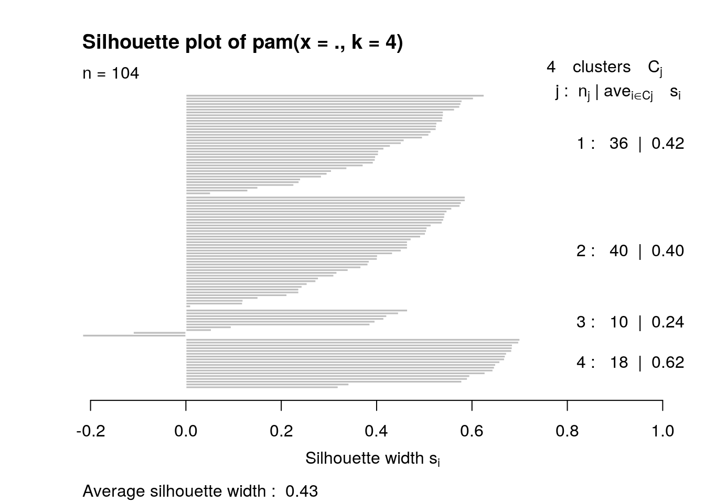

December 11, 2020
Shivani Kottur, ssk2425
Introduction
This project is all about analyzing characteristics of dogs. The first dataset, "dog_intelligence," is about different breeds of dogs and their mental characteristics. Its variables include the dog breed, their intelligence classification, the probability that the breed obeys the first command given, as well as the upper and lower limits of repetitions for the breed to understand any new commands. The second dataset, "AKC_Breed_Info," is about different breeds of dogs and their physical characteristics. Its variables include the dog breed, the upper and lower limits of height in inches, and the upper and lower limits of weight in pounds. The two datasets were acquired from the data.world website online. However, the first dataset's data originally came from Stanley Coren, a researcher from the University of British Columbia. The second dataset's data originally came from the American Kennel Club.
This data is interesting to me because I love dogs and have always wanted my own. So, I like having the opportunity to analyze data involving their physical and mental characteristics. I expect to see associations between their height and weight data. I do not expect any other associations.
Datasets
library(tidyverse)
mental <- read_csv("dog_intelligence.csv")
physical <- read_csv("AKC_Breed_Info.csv")
mental <- mental %>% as.data.frame
physical <- physical %>% as.data.frame
mental## Breed Classification obey reps_lower
## 1 Border Collie Brightest Dogs 95% 1
## 2 Poodle Brightest Dogs 95% 1
## 3 German Shepherd Brightest Dogs 95% 1
## 4 Golden Retriever Brightest Dogs 95% 1
## 5 Doberman Pinscher Brightest Dogs 95% 1
## 6 Shetland Sheepdog Brightest Dogs 95% 1
## 7 Labrador Retriever Brightest Dogs 95% 1
## 8 Papillon Brightest Dogs 95% 1
## 9 Rottweiler Brightest Dogs 95% 1
## 10 Australian Cattle Dog Brightest Dogs 95% 1
## 11 Pembroke Welsh Corgi Excellent Working Dogs 85% 5
## 12 Miniature Schnauzer Excellent Working Dogs 85% 5
## 13 English Springer Spaniel Excellent Working Dogs 85% 5
## 14 Belgian Shepherd Dog (Tervuren) Excellent Working Dogs 85% 5
## 15 Schipperke Excellent Working Dogs 85% 5
## 16 Belgian Sheepdog Excellent Working Dogs 85% 5
## 17 Collie Excellent Working Dogs 85% 5
## 18 Keeshond Excellent Working Dogs 85% 5
## 19 German Shorthaired Pointer Excellent Working Dogs 85% 5
## 20 Flat-Coated Retriever Excellent Working Dogs 85% 5
## reps_upper
## 1 4
## 2 4
## 3 4
## 4 4
## 5 4
## 6 4
## 7 4
## 8 4
## 9 4
## 10 4
## 11 15
## 12 15
## 13 15
## 14 15
## 15 15
## 16 15
## 17 15
## 18 15
## 19 15
## 20 15
## [ reached 'max' / getOption("max.print") -- omitted 116 rows ]physical## Breed height_low_inches height_high_inches weight_low_lbs
## 1 Akita 26 28 80
## 2 Anatolian Sheepdog 27 29 100
## 3 Bernese Mountain Dog 23 27 85
## 4 Bloodhound 24 26 80
## 5 Borzoi 26 28 70
## 6 Bullmastiff 25 27 100
## 7 Great Dane 32 32 120
## 8 Great Pyrenees 27 32 95
## 9 Great Swiss Mountain Dog 23 28 130
## 10 Irish Wolfhound 28 35 90
## 11 Kuvasz 28 30 70
## 12 Mastiff 27 30 175
## 13 Neopolitan Mastiff 24 30 100
## 14 Newfoundland 26 28 100
## 15 Otter Hound 24 26 65
## 16 Rottweiler 22 27 90
## 17 Saint Bernard 25 28 110
## 18 Afghan Hound 25 27 50
## 19 Alaskan Malamute na na na
## 20 American Foxhound 22 25 65
## weight_high_lbs
## 1 120
## 2 150
## 3 110
## 4 120
## 5 100
## 6 130
## 7 160
## 8 120
## 9 150
## 10 150
## 11 120
## 12 190
## 13 150
## 14 150
## 15 110
## 16 110
## 17 190
## 18 60
## 19 na
## 20 70
## [ reached 'max' / getOption("max.print") -- omitted 130 rows ]Untidying and Tidying
mental <- mental %>% pivot_longer(c("reps_lower", "reps_upper"),
names_to = "reps", values_to = "reps values")
mental <- mental %>% pivot_wider(names_from = "reps", values_from = "reps values")
mental## # A tibble: 136 x 5
## Breed Classification obey reps_lower reps_upper
## <chr> <chr> <chr> <dbl> <dbl>
## 1 Border Collie Brightest Dogs 95% 1 4
## 2 Poodle Brightest Dogs 95% 1 4
## 3 German Shepherd Brightest Dogs 95% 1 4
## 4 Golden Retriever Brightest Dogs 95% 1 4
## 5 Doberman Pinscher Brightest Dogs 95% 1 4
## 6 Shetland Sheepdog Brightest Dogs 95% 1 4
## 7 Labrador Retriever Brightest Dogs 95% 1 4
## 8 Papillon Brightest Dogs 95% 1 4
## 9 Rottweiler Brightest Dogs 95% 1 4
## 10 Australian Cattle Dog Brightest Dogs 95% 1 4
## # … with 126 more rowsphysical <- physical %>% pivot_longer(c("height_low_inches",
"height_high_inches"), names_to = "height", values_to = "height values")
physical <- physical %>% pivot_wider(names_from = "height", values_from = "height values")
physical <- physical %>% pivot_longer(c("weight_low_lbs", "weight_high_lbs"),
names_to = "weight", values_to = "weight values")
physical <- physical %>% pivot_wider(names_from = "weight", values_from = "weight values")
physical## # A tibble: 150 x 5
## Breed height_low_inch… height_high_inc… weight_low_lbs weight_high_lbs
## <chr> <chr> <chr> <chr> <chr>
## 1 Akita 26 28 80 120
## 2 Anatolian S… 27 29 100 150
## 3 Bernese Mou… 23 27 85 110
## 4 Bloodhound 24 26 80 120
## 5 Borzoi 26 28 70 100
## 6 Bullmastiff 25 27 100 130
## 7 Great Dane 32 32 120 160
## 8 Great Pyren… 27 32 95 120
## 9 Great Swiss… 23 28 130 150
## 10 Irish Wolfh… 28 35 90 150
## # … with 140 more rowsBoth datasets were already tidy when they were obtained. So in this section, I untidied and then tidied them again. For the first dataset, I untidied the "reps_lower" and "reps_higher" variables by combining them into one column through pivot_longer. Then, I separated them again to tidy using pivot_wider.
For the second dataset, I untidied more columns. I combined "height_low_inches with "height_high_inches" into one column, and "weight_low_lbs with "weight_high_lbs" into another column using pivot_longer. Then, I separated all 4 variables into individual columns in order to tidy them back, using pivot_wider. This allowed each observation to have its own row and each variable its own column.
Joining
## # A tibble: 104 x 8
## Breed Classification reps_lower reps_upper height_low_inch… height_high_inc…
## <chr> <chr> <dbl> <dbl> <dbl> <dbl>
## 1 Bord… Brightest Dogs 1 4 19 21
## 2 Gold… Brightest Dogs 1 4 21 24
## 3 Dobe… Brightest Dogs 1 4 26 28
## 4 Labr… Brightest Dogs 1 4 21 24
## 5 Papi… Brightest Dogs 1 4 8 11
## 6 Rott… Brightest Dogs 1 4 22 27
## 7 Aust… Brightest Dogs 1 4 17 20
## 8 Engl… Excellent Wor… 5 15 20 20
## 9 Schi… Excellent Wor… 5 15 10 13
## 10 Belg… Excellent Wor… 5 15 22 26
## # … with 94 more rows, and 2 more variables: weight_low_lbs <dbl>,
## # weight_high_lbs <dbl>The first dataset had 136 observations; the second dataset had 150 observations. I wanted to conduct an inner join between these two datasets. That is because I only wanted to analyze the dog breeds that were in common between the two, so all their physical and mental characteristics would be included. I didn't want to look at dog breeds that had some aspects of their data missing.
I joined the two sets by the Breed listed in both, creating a new joined dataset of 105 observations. Then, I had to drop row 71 of the new joined dataset, since I noticed that it had some values listed as "na." Not that the value was missing and R coded it as "N/A", but in the original set, the research manually typed it out as "na." Furthermore, I dropped a column with the variable "obey." This variable represents the percentage of commands obeyed by the breeds, but I didn't think it was as important and in-depth as other variables like "reps_lower" and "reps_higher" in representing the Breed's obedience level.
Finally, I had to convert four variables from character variables to numeric variables so they would be able to have summary statistics conducted on them. The final dataset has 104 observations with 8 variables.
Wrangling Part1
dogs %>% filter(between(weight_low_lbs, 5, 35)) %>% summarize(mean(weight_high_lbs))## # A tibble: 1 x 1
## `mean(weight_high_lbs)`
## <dbl>
## 1 27.7dogs %>% select(Breed, weight_low_lbs, weight_high_lbs) %>% summarize(n_distinct(Breed))## # A tibble: 1 x 1
## `n_distinct(Breed)`
## <int>
## 1 104dogs %>% arrange(height_low_inches) %>% summarize(sd(height_low_inches))## # A tibble: 1 x 1
## `sd(height_low_inches)`
## <dbl>
## 1 6.75dogs %>% group_by(Classification) %>% summarize(max(weight_high_lbs))## # A tibble: 6 x 2
## Classification `max(weight_high_lbs)`
## <chr> <dbl>
## 1 Above Average Working Dogs 150
## 2 Average Working/Obedience Intelligence 160
## 3 Brightest Dogs 110
## 4 Excellent Working Dogs 110
## 5 Fair Working/Obedience Intelligence 190
## 6 Lowest Degree of Working/Obedience Intelligence 190dogs %>% mutate(height_range = height_high_inches - height_low_inches)## # A tibble: 104 x 9
## Breed Classification reps_lower reps_upper height_low_inch… height_high_inc…
## <chr> <chr> <dbl> <dbl> <dbl> <dbl>
## 1 Bord… Brightest Dogs 1 4 19 21
## 2 Gold… Brightest Dogs 1 4 21 24
## 3 Dobe… Brightest Dogs 1 4 26 28
## 4 Labr… Brightest Dogs 1 4 21 24
## 5 Papi… Brightest Dogs 1 4 8 11
## 6 Rott… Brightest Dogs 1 4 22 27
## 7 Aust… Brightest Dogs 1 4 17 20
## 8 Engl… Excellent Wor… 5 15 20 20
## 9 Schi… Excellent Wor… 5 15 10 13
## 10 Belg… Excellent Wor… 5 15 22 26
## # … with 94 more rows, and 3 more variables: weight_low_lbs <dbl>,
## # weight_high_lbs <dbl>, height_range <dbl>dogs %>% summarize(mean_low_height = mean(height_low_inches))## # A tibble: 1 x 1
## mean_low_height
## <dbl>
## 1 18.1In this section, I used the six core dplyr verbs to explore the dataset. After filtering for dogs who have a weight_low_lbs between 5 and 35 pounds, their mean weight_high_lbs is 27.733 lbs. There are 104 distinct dog breeds. After arranging the height_low_inches from smallest to greatest, the standard deviation of the height_low_inches is 6.751 inches. Next, we found the max weight_high_lbs for each intelligence classification by grouping by each classification. Then, we found the range of heights for each dog breed by making a new column for it using mutate. Finally, we found the mean height_low_inches using summarize.
Wrangling Part2
dogs %>% summarize_if(is.numeric, funs(mean, sd, min, max, var))## # A tibble: 1 x 30
## reps_lower_mean reps_upper_mean height_low_inch… height_high_inc…
## <dbl> <dbl> <dbl> <dbl>
## 1 26.4 42.5 18.1 21.0
## # … with 26 more variables: weight_low_lbs_mean <dbl>,
## # weight_high_lbs_mean <dbl>, reps_lower_sd <dbl>, reps_upper_sd <dbl>,
## # height_low_inches_sd <dbl>, height_high_inches_sd <dbl>,
## # weight_low_lbs_sd <dbl>, weight_high_lbs_sd <dbl>, reps_lower_min <dbl>,
## # reps_upper_min <dbl>, height_low_inches_min <dbl>,
## # height_high_inches_min <dbl>, weight_low_lbs_min <dbl>,
## # weight_high_lbs_min <dbl>, reps_lower_max <dbl>, reps_upper_max <dbl>,
## # height_low_inches_max <dbl>, height_high_inches_max <dbl>,
## # weight_low_lbs_max <dbl>, weight_high_lbs_max <dbl>, reps_lower_var <dbl>,
## # reps_upper_var <dbl>, height_low_inches_var <dbl>,
## # height_high_inches_var <dbl>, weight_low_lbs_var <dbl>,
## # weight_high_lbs_var <dbl>dogs %>% group_by(Classification) %>% summarize_if(is.numeric,
funs(mean, sd, min, max, var))## # A tibble: 6 x 31
## Classification reps_lower_mean reps_upper_mean height_low_inch…
## <chr> <dbl> <dbl> <dbl>
## 1 Above Average… 16 25 18.1
## 2 Average Worki… 26 40 19.1
## 3 Brightest Dogs 1 4 19.1
## 4 Excellent Wor… 5 15 19.5
## 5 Fair Working/… 41 80 14.2
## 6 Lowest Degree… 81 100 19.2
## # … with 27 more variables: height_high_inches_mean <dbl>,
## # weight_low_lbs_mean <dbl>, weight_high_lbs_mean <dbl>, reps_lower_sd <dbl>,
## # reps_upper_sd <dbl>, height_low_inches_sd <dbl>,
## # height_high_inches_sd <dbl>, weight_low_lbs_sd <dbl>,
## # weight_high_lbs_sd <dbl>, reps_lower_min <dbl>, reps_upper_min <dbl>,
## # height_low_inches_min <dbl>, height_high_inches_min <dbl>,
## # weight_low_lbs_min <dbl>, weight_high_lbs_min <dbl>, reps_lower_max <dbl>,
## # reps_upper_max <dbl>, height_low_inches_max <dbl>,
## # height_high_inches_max <dbl>, weight_low_lbs_max <dbl>,
## # weight_high_lbs_max <dbl>, reps_lower_var <dbl>, reps_upper_var <dbl>,
## # height_low_inches_var <dbl>, height_high_inches_var <dbl>,
## # weight_low_lbs_var <dbl>, weight_high_lbs_var <dbl>cormat <- dogs %>% select_if(is.numeric) %>% cor(use = "pair")
cormat## reps_lower reps_upper height_low_inches height_high_inches
## reps_lower 1.00000000 0.94888319 -0.0728756 -0.1231179
## reps_upper 0.94888319 1.00000000 -0.1444170 -0.1828860
## height_low_inches -0.07287560 -0.14441703 1.0000000 0.9604266
## height_high_inches -0.12311788 -0.18288598 0.9604266 1.0000000
## weight_low_lbs 0.05745469 -0.01079675 0.7368888 0.6572056
## weight_high_lbs 0.04264460 -0.01581360 0.7296752 0.6550512
## weight_low_lbs weight_high_lbs
## reps_lower 0.05745469 0.0426446
## reps_upper -0.01079675 -0.0158136
## height_low_inches 0.73688884 0.7296752
## height_high_inches 0.65720556 0.6550512
## weight_low_lbs 1.00000000 0.9607178
## weight_high_lbs 0.96071784 1.0000000This section generated three different outputs. In the first one, the mean, standard deviation, minimum, maximum, and variance of every numeric variable was calculated. The second output calculated all the above summary statistics, but grouped by each intelligence level classification. The final output was a correlation matrix of the correlations among all the numeric variables.
Visualizing
library(RColorBrewer)
cormat %>% as.data.frame %>% rownames_to_column("var1") %>% pivot_longer(-1,
"var2", values_to = "correlation") %>% ggplot(aes(var1, var2,
fill = correlation)) + geom_tile() + theme(axis.text.x = element_text(angle = 90,
hjust = 1)) + coord_fixed() + ggtitle("Correlation Heatmap") +
geom_text(aes(label = round(correlation, 2)))ggplot(dogs, aes(height_low_inches, weight_low_lbs, color = Classification)) +
geom_point() + scale_x_continuous(breaks = seq(0, 50, 5)) +
xlab("Height Lower Limit (inches)") + ylab("Weight Lower Limit (pounds)") +
ggtitle("Weight Versus Height (Lower Limit)") + theme(legend.justification = "bottom") +
scale_color_brewer(palette = "Set3")ggplot(dogs, aes(x = weight_low_lbs, fill = Classification)) +
geom_bar(aes(y = reps_lower), stat = "summary", fun = mean) +
scale_x_continuous(breaks = seq(0, 200, 10)) + theme(axis.text.x = element_text(angle = 90,
hjust = 1)) + xlab("Weight Lower Limit (pounds)") + ylab("Repetitions Lower Limit") +
ggtitle("Repetitions Versus Weight (Lower Limits)") + theme(legend.justification = "top") +
scale_fill_brewer()The first plot is a correlation heatmap. It shows the correlations between all of the numeric variables in this dataset. The plot shows some interesting trends. As expected, height and weight (of both lower and upper limits) are strongly correlated (correlation coefficient is between 0.75 and 1.00). Another interesting observation is that the repetitions (of both lower and upper limits) are not correlated at all to either height or weight of the dog breed. This essentially means that intelligence level is not correlated with size (height/weight) of a dog breed.
The second plot is a scatterplot. It shows the relationship between the weight (lower limit) and height (lower limit) of dog breeds. The intelligence level classification is mapped into the color of the scatterplot points. An interesting trend is that as expected, as the height (lower limit) of a dog breed increases, the weight (lower limit) of the breed increases as well. However, intelligence level classifications don't seem to have any correlation with the other 2 variables; they seem to be randomly spread out (colored) throughout the points.
The third plot is a barplot. It shows the relationship between the repetitions (lower limit) and weight (lower limit) of dog breeds. The intelligence level classification is mapped into the fill of the bars. There are some interesting trends. First, as the weight (lower limit) of a dog breed increases, the repetitions (lower limit) seems to decrease; there is an outlier to this trend though. In general, the intelligence level classification doesn't seem to have any correlation with the other 2 variables; they seem to be randomly spread out (filled) throughout the bars.
Dimensionality Reduction
library(cluster)
pam_data <- dogs %>% select(height_high_inches, weight_high_lbs,
reps_upper)
sil_width <- vector()
for (i in 2:10) {
pam_fit <- pam(pam_data, k = i)
sil_width[i] <- pam_fit$silinfo$avg.width
}
ggplot() + geom_line(aes(x = 1:10, y = sil_width)) + scale_x_continuous(name = "k",
breaks = 1:10)
pam1 <- pam_data %>% scale %>% pam(k = 4)
pam1## Medoids:
## ID height_high_inches weight_high_lbs reps_upper
## [1,] 23 -0.5009500 -0.5860981 -0.6188578
## [2,] 22 0.6194543 0.4656999 -0.6188578
## [3,] 95 0.7439436 1.8430545 1.3282636
## [4,] 80 -1.1233968 -0.9116546 1.3282636
## Clustering vector:
## [1] 1 2 2 2 1 2 1 1 1 2 1 2 1 1 2 2 2 1 2 2 1 2 1 1 2 2 1 2 1 2 1 2 1 1 2 2 1
## [38] 1 2 1 1 2 2 2 2 1 2 3 2 2 2 1 2 1 2 1 2 1 1 2 2 2 2 1 2 2 3 1 1 1 1 1 2 2
## [75] 1 1 1 2 4 4 4 4 4 4 4 4 4 4 4 3 4 3 3 4 3 4 4 3 4 3
## [ reached getOption("max.print") -- omitted 4 entries ]
## Objective function:
## build swap
## 0.8412860 0.7670614
##
## Available components:
## [1] "medoids" "id.med" "clustering" "objective" "isolation"
## [6] "clusinfo" "silinfo" "diss" "call" "data"pamclust <- pam_data %>% mutate(cluster = as.factor(pam1$clustering))
pamclust %>% ggplot(aes(height_high_inches, weight_high_lbs,
color = cluster)) + geom_point() + ggtitle("Cluster Scatterplot")pamclust %>% group_by(cluster) %>% summarize_if(is.numeric, mean,
na.rm = T)## # A tibble: 4 x 4
## cluster height_high_inches weight_high_lbs reps_upper
## <fct> <dbl> <dbl> <dbl>
## 1 1 15.9 30.5 27.6
## 2 2 27.0 77.2 27.2
## 3 3 28.7 129 80
## 4 4 13.9 21.8 85.6pam1$silinfo$avg.width## [1] 0.4281911plot(pam1, which = 2) I performed PAM clustering on my dataset. I clustered by 3 numeric variables, "height_high_inches", "weight_high_lbs", and "reps_upper". I wanted to see how these 3 variables were related. In the first step, I figured out how many clusters were needed by generating a silhouette plot. This plot told me I needed 4 clusters, since that was the k-value with the highest width (~0.485). After that, I conducted the PAM clustering analysis. Then, I visualized the clusters. There appeared to be 3 distinct clusters, not 4, because two clusters appeared to be in the same area (the red and purple ones). So in a way, the data instead seems to be clustered into three different groups. Perhaps this corresponds to small, medium, and large dogs (since height and weight were mapped on the axes). Afterward, the mean for each cluster's variables was computed. Finally, the average silhouette width was calculated to be 0.43. This value indicates that the structure is weak and could be artificial (corresponding to values 0.26-0.50). Though the width is on the upper end of this range, perhaps its weak nature explains why the four expected clusters weren't very distinct on the plot. Overall, this PAM clustering analysis did not have much goodness-of-fit since the average silhouette width was weak and the 4 clusters weren't very distinct.